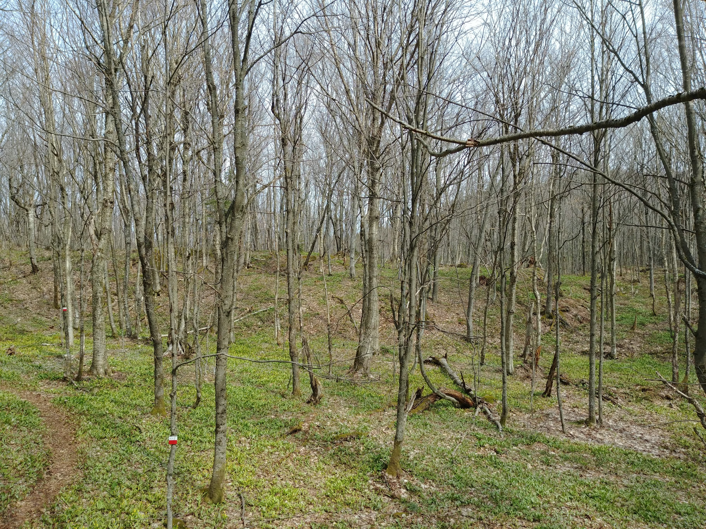
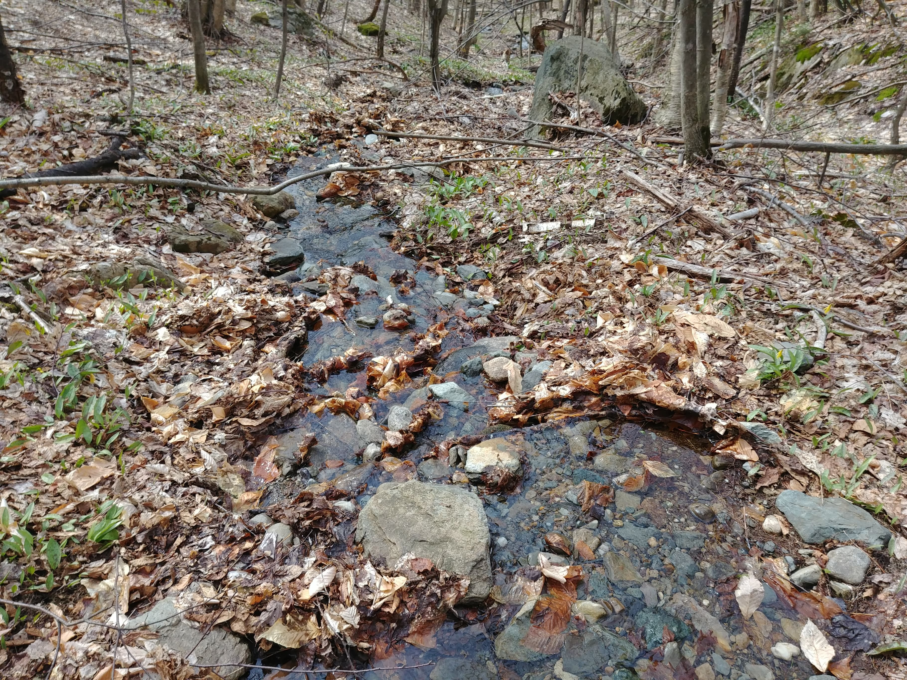
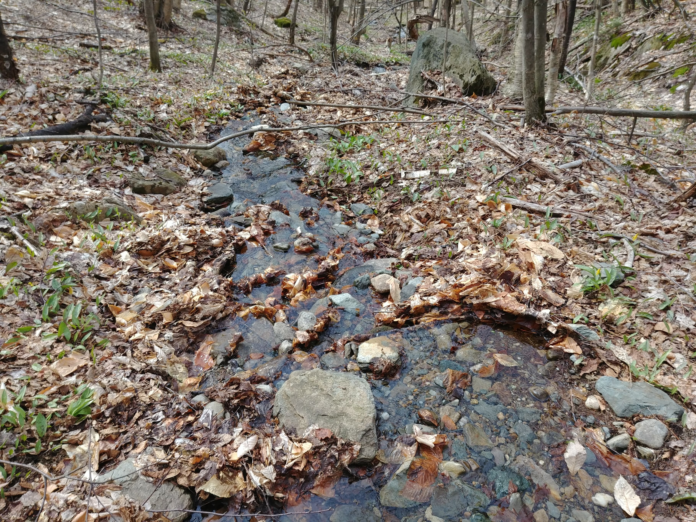
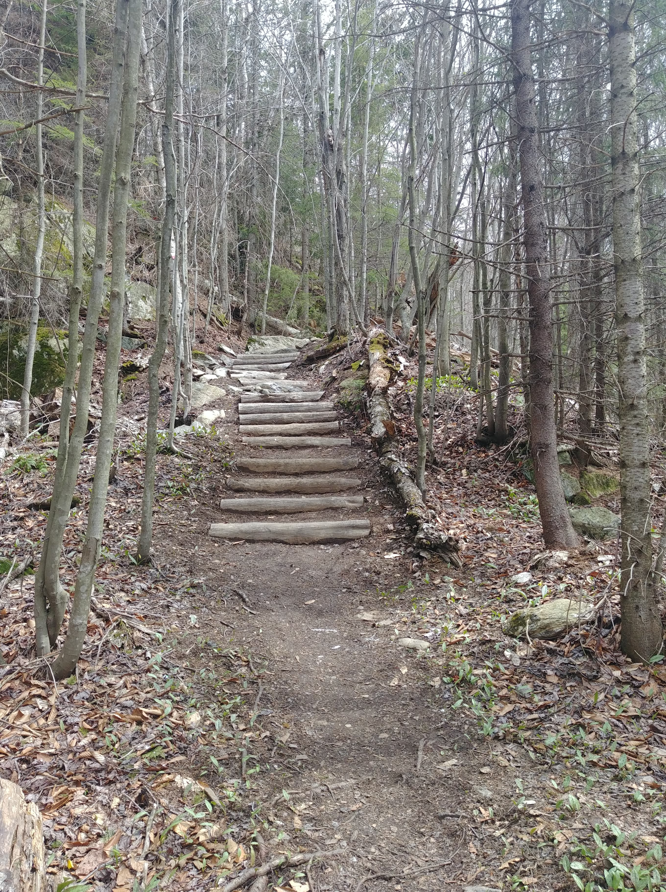
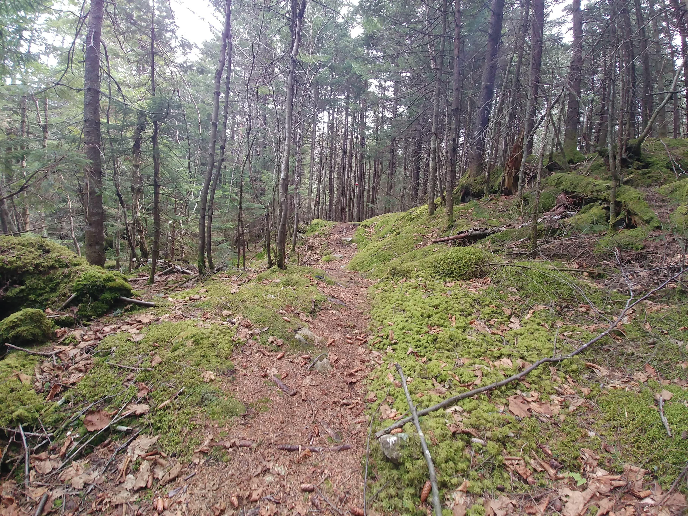
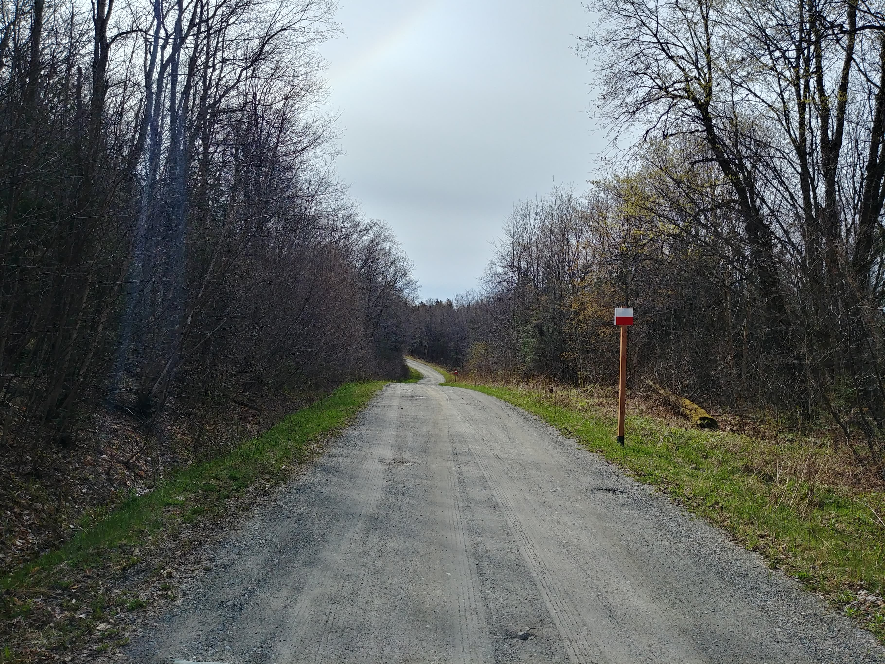

Stoke Mountains
8th May 2021


- Length: 18,97 km
- Positive elevation: 890 m
- Climax: 653 m
- Summit view: 180°
- Duration: 6 hours
I wanted this day hike to complete the crossing of the Stoke Mountains, and the weekend of May 8 was a good fit; the thaw period ending earlier than elsewhere in this region. Interesting fact: the Stoke Mountains form a mountain range that stands out from the great Eastern Townships trail. The geographical situation means that the place is little frequented by hikers, offering kilometers of walking in peace and within a nature not too affected. Rare thing in Estrie...
 

After I got to the parking lot, located at the end of Rang 10, I started a short approach walk on a forest path to the trailhead. From the first meters, the tone is set. The very rugged terrain is punctuated with fairly steep climbs and descents, which gives me great pleasure since I was looking for a sporty hike at that time. The relief and the long distance imply a minimum of preparation to prevent the risk of foot injuries and energy drops.
  I must say, however, that the summits are not up to the effort invested in the climbs, as there are little if any viewpoints. Although the summits are a bit disappointing, I still note that the region's forest is particularly pretty, with no human traces. So I cross the mountain ridge for about ten kilometers, offering viewpoints and points of interest: caves, cliffs, marshes, etc. This section of the hike does not cross any other path on the entire crossing: little frequented, the region is endowed with dense and diverse vegetation.